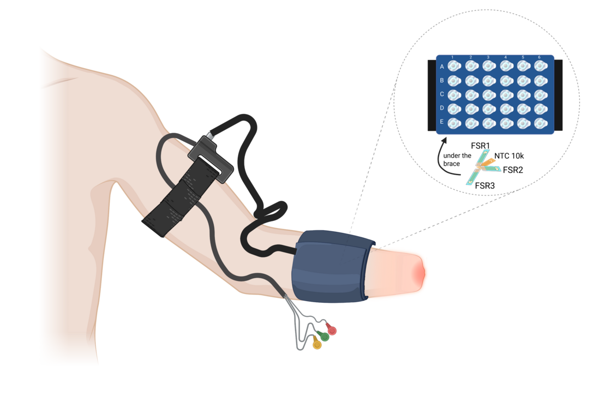
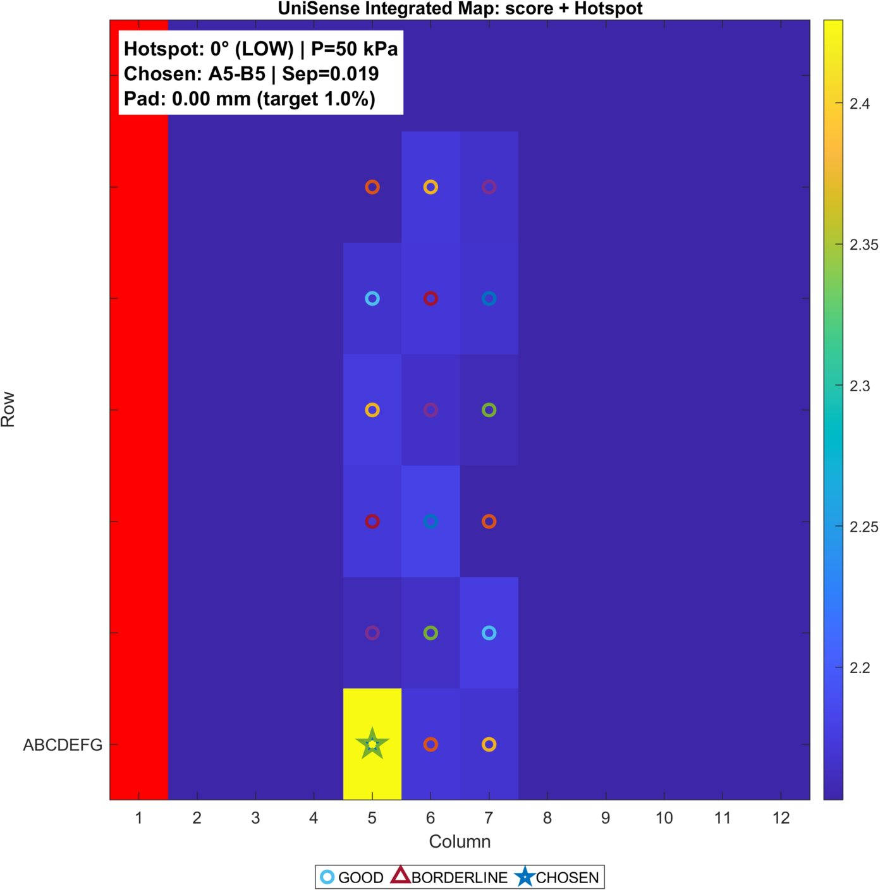
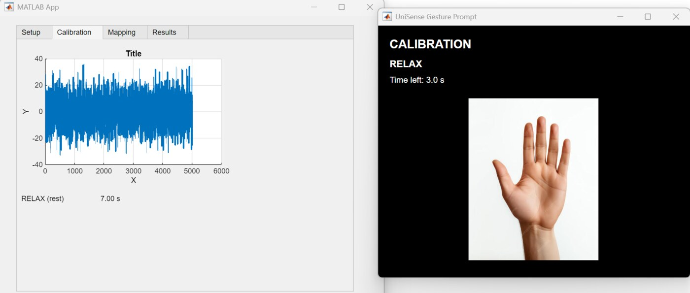
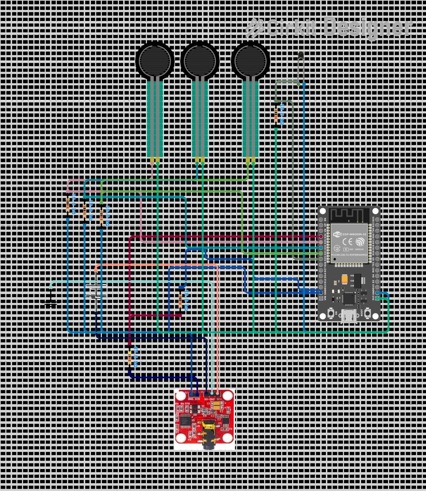

CONCEPT · SENSORISED SOCKETUniSense
Dual-Mode Prosthetic Socket Mapping System
◇ PROBLEM
Prosthetic sockets are still fit by trial and error. Clinicians choose EMG control sites and manage pressure comfort separately — so a socket that controls well can still hurt, driving discomfort, tissue damage and device abandonment.
◈ SOLUTION
A wearable that simultaneously maps EMG control quality and pressure/temperature comfort across the residual limb, scores every candidate site and recommends locations that are both controllable and comfortable — backed by MATLAB analysis and COMSOL field modelling.
The integrated map fuses control-site separability with comfort hotspots into a single decision surface, so clinicians can pick electrode positions that maximise signal and wearability instead of trading one for the other.



◆ Presented at the Australasian Bioelectronics, Neurosensing & Neuromodulation Symposium (ABNN) 2026.